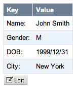
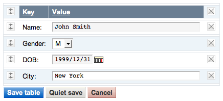

%EDITTABLE{}% directly above the table. This can be added to tables that are formatted with TablePlugin: add the EDITTABLE macro just above or below the TABLE tag. It can also be used without any TABLE tag.
Customize entry fields by specifying the format: use a text field, a drop down box, a date field, radio buttons or checkboxes.
Multiple tables per topic are editable, but only one at a time can be edited.
%EDITTABLE{...}% macro just before an existing table to make it editable, or add the variable anywhere in a topic to start a new table.
| Attribute | Comment | Default |
|---|---|---|
header | Specify the header format of a new table like "|*Food*|*Drink*|". Useful to start a table with only a button | (no header) |
format | The format of one column when editing the table. A cell can be a text input field, or any of these edit field types: • Text input field (1 line): | text, <size>, <initial value> | • Textarea input field: | textarea, <rows>x<columns>, <initial value> | • Drop down box: | select, <size>, <option 1>, <option 2>, etc* | * only one item can be selected • Radio buttons: | radio, <size*>, <option 1>, <option 2>, etc | * size indicates the number of buttons per line in edit mode • Checkboxes: | checkbox, <size*>, <option 1>, <option 2>, etc | * size indicates the number of checkboxes per line in edit mode • Fixed label: | label, 0, <label text> | • Row number: | row, <offset> | • Date: | date, <size>, <initial value>, <DHTML date format> | (see Date Field Type) | "text, 16" for all cells |
changerows | Rows can be added and removed if "on" Rows can be added but not removed if "add" Rows cannot be added or removed if "off" | CHANGEROWS plugin setting |
quietsave | Quiet Save button is shown if "on", hidden if "off" | QUIETSAVE plugin setting |
include | Other topic defining the EDITTABLE parameters. The first %EDITTABLE% in the topic is used. This is useful if you have many topics with the same table format and you want to update the format in one place. Use topic or web.topic notation. | (none) |
helptopic | Topic name containing help text shown below the table when editing a table. The %STARTINCLUDE% and %STOPINCLUDE% macros can be used in the topic to specify what is shown. | (no help text) |
headerislabel | Table header cells are read-only (labels) if "on"; header cells can be edited if "off" or "0" | "on" |
editbutton | Set edit button text, e.g. "Edit this table"; set button image with alt text, e.g. "Edit table, %PUBURL%/%SYSTEMWEB%/DocumentGraphics/edittopic.gif"; hide edit button at the end of the table with "hide" (Note: Button is automatically hidden if an edit button is present in a cell) | EDITBUTTON plugin setting |
buttonrow | Set to top to put the edit buttons above the table. | bottom |
javascriptinterface | Use javascript to directly move and delete row without page refresh. Enable with "on", disable with "off". | JAVASCRIPTINTERFACE plugin setting |
<initial value> (of text input field) and <label text> (of fixed label) get expanded when a new row is added. This can be used for example to add a timestamp to a label. You can escape characters with format tokens if you do not want that.
Any macro inside a table cell will be preserved. For instance, %TOPIC% will not get expanded to the current topic name.
The format tokens are the same as with FormattedSearch:
| Escape: | Expands To: |
|---|---|
$n or $n() |
New line. Use $n() if followed by alphanumeric character, e.g. write Foo$n()Bar instead of Foo$nBar |
$nop or $nop() |
Is a "no operation". |
$quot |
Double quote (") |
$percnt |
Percent sign (%) |
$dollar |
Dollar sign ($) |
date field type allows one to choose a date with a popup calendar. Popup calendar works with all modern browsers. The date picker button is inactive if the browser cannot support the popup calendar or if Javascript is disabled.
The optional date format specifiers are described in the JSCalendarContrib documentation. When time specifiers are used, the calendar allows one to choose a date and a time.
In some rare cases, if you pass the date format in %EDITTABLE{format="..."}% and the date format components are adjacent, you must escape the % characters to $percnt to prevent that the components are expanded as macros. For example:
%EDITTABLE{format="|date,15,,$percntY$percntm$percntd|"}%
%EDITCELL{ "type, ..." }% macro at the end of the cell content. This is useful to override the per column %EDITTABLE{ format="..." }% settings, or to create tables with key/value rows. All edit field types of the format="..." parameter are supported. For example, to define a text field, type: | cell content %EDITCELL{ "text, 20" }% |
It is also possible to place the edit button inside a cell instead of default location below the table. Type | %EDITCELL{ "editbutton, 1, Edit this table" }% | to show a button, or | %EDITCELL{ "editbutton, 1, Edit table, Image-URL" }% | to show a button image with alternate text.
Note: The %EDITCELL{ }% macro cannot be used by itself; place an %EDITTABLE{ }% variable at the beginning of a table where you want to use %EDITCELL{ }% variables.
%EDITTABLE{ format="| row, -1 | text, 20, init | select, 1, one, two, three, four | radio, 3,:-),:-I,:-( | label, 0, %SERVERTIME{"$day $mon $year $hour:$min"}% |" changerows="on" }%
%EDITTABLE{ format="| row, -1 | text, 20, init | select, 1, one, two, three, four | radio, 3,:-),:-I,:-( | label, 0, 08 Feb 2023 15:51 |" changerows="on" }%
| Nr | Text field | Drop down | Mood | Timestamp |
|---|---|---|---|---|
| 1 | hello table | one | |
26 Jun 2002 12:30 |
| 2 | two | |
27 Jun 2002 12:40 |
| Nr | Text field | Drop down | Mood | Timestamp |
|---|---|---|---|---|
| 1 |   |
26 Jun 2002 12:30 | ||
| 2 | |
27 Jun 2002 12:40 |
%TABLE{"headerrows="1"}%
%EDITTABLE{ format="| label | text, 40 |" changerows="off" }%
|*Key*|*Value*|
| Name: | John Smith |
| Gender: | M %EDITCELL{select, 1, , F, M}% |
| DOB: | 1999/12/31 %EDITCELL{date, 10}% |
| City: | New York |
| You get: | Table in edit mode: |
|---|---|
|  |  |
%MAKETEXT{}% are translated into other languages.
| Preference | Meaning | Default |
|---|---|---|
| EDITTABLEPLUGIN_JAVASCRIPTINTERFACE | Set to 0 to be disable the ability to directly move and delete row without page refresh. Can be overridden with parameter javascriptinterface |
1 |
| EDITTABLEPLUGIN_CHANGEROWS | Default for change rows flag: on, off, add |
on |
| EDITTABLEPLUGIN_QUIETSAVE | Default flag for quiet save option: on to show the Quiet Save button, off to hide |
on |
| EDITTABLEPLUGIN_EDIT_BUTTON | Specify button text, or alternate text, image URL. |
Edit this table, |
| EDITTABLEPLUGIN_SAVE_BUTTON | Specify button text, or alternate text, image URL. |
Save table |
| EDITTABLEPLUGIN_QUIET_SAVE_BUTTON | Specify button text, or alternate text, image URL. |
Quiet save |
| EDITTABLEPLUGIN_ADD_ROW_BUTTON | Specify button text, or alternate text, image URL. |
Add row |
| EDITTABLEPLUGIN_DELETE_LAST_ROW_BUTTON | Specify button text, or alternate text, image URL. |
Delete last row |
| EDITTABLEPLUGIN_CANCEL_BUTTON | Specify button text, or alternate text, image URL. |
Cancel |
| EDITTABLEPLUGIN_INCLUDED_TOPIC_DOES_NOT_EXIST | Default help texts | Warning: 'include' topic does not exist! |
| ... ||) and cell justification (e.g. | centered | right |)
%EDITTABLE{}% statements on the same line in the source
select,1,%<nop>X%,%<nop>Y%
%EDITTABLE{}% macro may not be split over multiple lines
cd /path/to/foswiki perl tools/extension_installer <NameOfExtension> installIf you have any problems, or if the extension isn't available in
configure, then you can still install manually from the command-line. See https://foswiki.org/Support/ManuallyInstallingExtensions for more help.
Test if the Plugin is correctly installed: | Change History: | |
| 04 Apr 2017: | 4.46: Item14324: Unescaped left brace - Perl 5.25.10 |
| 28 Nov 2016: | 4.45: Released with Foswiki 2.1.3 |
| 19 Sep 2015: | 4.44: |
| 28 Nov 2012: | 4.43: |
| 06 Apr 2012: | 4.42: Sandbox should use %SANDBOXWEB% macro. Release with Foswiki 1.1.5. |
| 05 Dec 2011: | 4.41: Version released with Foswiki 1.1.4. Minor code and documentation cleanup. |
| 11 Apr 2011: | 4.40: Version released with Foswiki 1.1.3. Only a minor change related to how the plugin is being upgraded |
| 20 Jan 2011: | 4.39: Arthur Clemens: |
| 06 Dec 2010: | 4.38: Andrew Jones: |
| 06 Nov 2010: | 4.37: Paul Harvey: $percent back to $percnt |
| 31 Jul 2010: | 4.35: Paul Harvey: |
| 23 Dec 2009: | 4.34: Arthur Clemens: Fixed a problem that the button "Delete last row" would remove newly added rows. |
| 16 Sep 2009: | 4.33: Kenneth Lavrsen: Removed debug alert when deleting rows |
| 13 Sep 2009: | 4.32: Arthur Clemens: Fix possible sorting issue on edit screen when no TABLE tag is present. |
| 02 Sep 2009: | 4.31: Kenneth Lavrsen: Disabled the display of SpreadSheetPlugin "CALC" in headers and footers as this caused the string CALC to be saved instead of the real formular. |
| 14 Jun 2009: | 4.30: Arthur Clemens: Major code refactoring to let EditTablePlugin work together with SpreadSheetPlugin. |
| 18 Apr 2009: | 4.22: Ignore all saving unless it happened by saving a form using POST method. Fixed including edit parameters from subwebs. Removed support for settings in the plugin topic which is a bad idea anyway as they get overwritten at each Foswiki upgrade. Define the global settings in Main.SitePreferences instead. |
| 26 Mar 2009: | 4.21: Fixed a problem with plugin going into deep recursive orbit when a table is followed by text containing vertical bars but not valid table row. |
| 17 Mar 2009: | 4.20: Fixed several bugs related to use of macros in EDITTABLE and TABLE tags |
| 08 Feb 2009: | 4.13: Fixed incidental removal of EDITCELL tags when a different table in the topic is edited. Improved display of linebreaks and TML inside cells. |
| 07 Feb 2009: | 4.12: Protect verbatim class="xxx" during edit. |
| 16 Dec 2008: | 4.11: Kenneth Lavrsen: Foswiki version |
| 01 Nov 2008: | 4.9: Arthur Clemens: Fixed rendering of verbatim blocks when editing. Added parameter buttonrow="top" to allow the buttons to be positioned at the top of the table. |
| 26 Sep 2008: | 4.8.7: Arthur Clemens: Let empty table initialize more than one column from header parameter |
| 24 Sep 2008: | 4.8.6: Arthur Clemens: Fix parsing of header labels |
| 21 Sep 2008: | 4.8.5: Arthur Clemens: Fix rendering of TML inside label |
| 03 Aug 2008: | 4.8.4: TWiki 4.2.1 release version |
| 19 Jul 2008: | 4.8.3: Bugfix release |
| 20 Mar 2008: | 4.8: Arthur Clemens: Code refactoring; disabled table sort when editing; removed usage of $percnt to prevent variable expansion (is now done automatically); made Javascript interface aware of headers and footers, and of changerows="off"; improved feedback on row move. |
| 25 Dec 2007: | 4.7.1: Arthur Clemens: Added warning if include parameter topic does not exist. |
| 22 Dec 2007: | 4.7: Arthur Clemens: Changed handling of escaped variables. To escape TWiki variable, use formatting tokens such as $percnt. |
| 16 Dec 2007: | 4.6: Kenneth Lavrsen: The plugin prevents TablePlugin from initsorting the table being edited. This is done by temporarily appending the attribute disableallsort="on" to the TABLE tag of a table being edited. Additionally all header sorting is disabled while editing a table by setting a hidden formfield sort to "off". Disabling sorting while editing is needed now that the EditTablePlugin supports moving rows up and down. |
| 01 Dec 2007: | 4.3: Arthur Clemens: added support for TablePlugin headerrows and footerrows; updated edit button |
| 16 Oct 2007: | 4.2: Arthur Clemens: refactoring, bug fixes. |
| 07 Oct 2007: | 15182: PTh: Added VarEDITTABLE to have it listed in TWikiVariables |
| 15 Mar 2007: | Arthur Clemens: Fixed eating of double newlines; icons for Javascript buttons and interface improvements. By default the Javascript interface is turned off, set JAVASCRIPTINTERFACE to use it in edit mode. |
| 05 Mar 2007: | Byron Darrah: Added ability to dynamically move and delete rows. |
| 12 Oct 2006: | Item2982 Use default date format from JSCalendarContrib |
| 02 Oct 2006: | Item2884 Check also for access permission in meta data; proper fix to not warn if oneself has a lock on topic |
| 30 Aug 2006: | Item2829 Remove whitespace from select, radio and checkbox items; restored topic lock if $TWiki::Plugins::VERSION < 1.1 |
| 29 Jul 2006: | Item2684 - Quietly ignore topic edit locks on table edit |
| 21 Jan 2006: | |
| 16 Sep 2004: | Added radio buttons and checkbox controls; escaped "|" pipe symbol found in input fields to preserve tables |
| 01 Aug 2004: | Fixed bug where edittable did not work if at the end of a topic |
| 07 Apr 2004: | Fixed bug where two tables got updated when you edit and save a table included into a topic containing other edit tables |
| 02 Mar 2004: | Default for %EDITCELL{editbutton}% is EDITBUTTON preference |
| 27 Feb 2004: | Added QUIETSAVE setting and quietsave parameter; image for Edit button |
| 18 Feb 2004: | Doc fixes; allow edit button anywhere in a cell not just at the end of a cell |
| 17 Feb 2004: | Added per cell definition of edit field types with %EDITCELL{}% variable; added headerislabel and editbutton parameters |
| 20 Dec 2003: | Fixed bug where calendar did not work after adding a row ( |
| 13 Dec 2003: | Added CHANGEROWS, JSCALENDARDATEFORMAT, JSCALENDARLANGUAGE, JSCALENDAROPTIONS settings |
| 16 Oct 2003: | small typo fixed (garbled if ---+ header on top) |
| 15 Oct 2003: | new date field type with Javascript calendar - CN |
| 14 Oct 2003: | docfix: the documentation page was an old one - CN |
| 13 Oct 2003: | bugfix: %-vars in select were resetted to first on add/del row - CN |
| 18 Sep 2003: | incompatibility: changed default of changerows to on; support for %-vars, Quiet save for saving without notification; all other fixes in Dev topic integrated - CN |
| 08 Nov 2002: | Prevent variable expansion in label text; added escape characters |
| 27 Jun 2002: | New helptopic parameter |
| 26 Jun 2002: | Support for variables in included EDITTABLE parameters; fixed problem with HTML in cells |
| 21 May 2002: | Added fixed label format; new changerows="add" parameter |
| 27 Apr 2002: | Fixed bug where text after a double quote in a cell disappeared |
| 18 Apr 2002: | Fixed bug where table was breaking when pasting multiple lines into an edit field using Netscape on Unix |
| 08 Apr 2002: | Check for change permission and edit lock of topic |
| 05 Apr 2002: | Initial version |
| Dependencies: | None |
| Perl Version: | 5.008 |